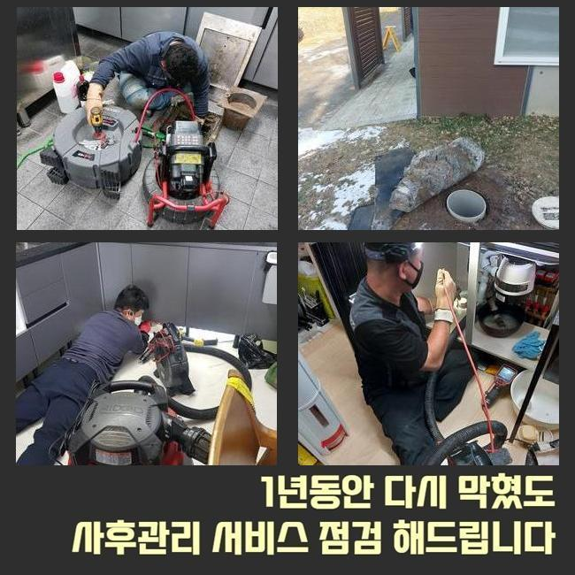
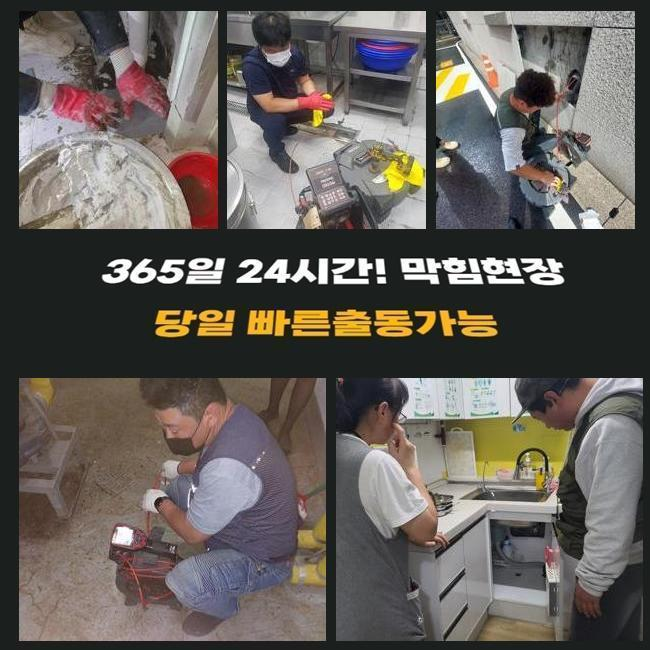
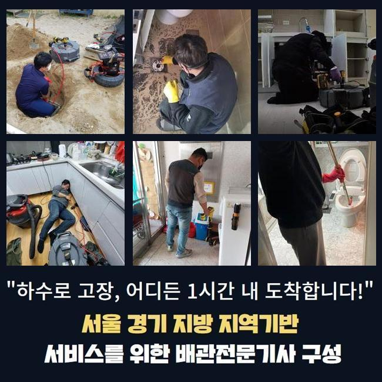
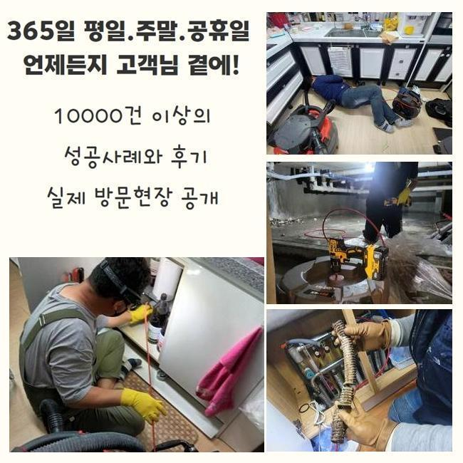
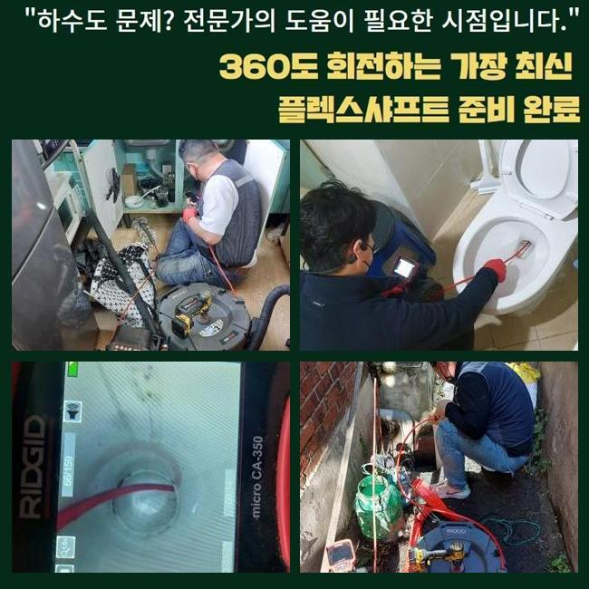
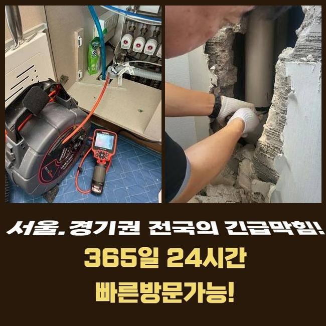

🏠 과천동화장실역류 주암동 오수맨홀청소 배관전문
용인 하수구막힘 전문 시공 후기

📋 작업 개요
- 위치: 용인
- 서비스 유형: 하수구막힘, 배관막힘, 맨홀막힘, 역류해결, 뚫는업체, 배관청소, 고압세척, 악취차단
- 작업 일시: 2025. 2. 11. 23:54
- 업체명: 하수구수사대 (010-5615-2118)
🔍 문제 상황
과천동화장실역류 주암동 오수맨홀청소 배관전문
복합적인 상가에서 하수관의 역행이 벌어졌다는 이야기를 듣고 얼른 개선을 해드리려고 막힘이 생긴 곳으로 가봤습니다
복층의 건물이라면 각 공간마다 장착된 배관이 메인배관에서 합쳐지는 모양새를 지닌 설치장소들이 대다수입니다
한 두곳의 포인트에서 결함이 탄생했다고 해도 빠르게 막힘이 전이돼서 여러 사람들이 불편함을 경험하기도 합니다
오늘 이야기할 하수구 설치장소는 많은 영업장들이 있는 상가였는데 하루 아침에 하수구가 고장나버려서 영업을 할 수 없어서 불편감과 동시에 경제적 곤란까지 엎친데 덮친 격이었습니다
건물 내에서 하수설비에 대한 곤란이 자꾸만 생겨나면 건물 내의 모든 사람들에게 곤란을 부풀릴 수 있다보니 굼뜨게 움직이지 않고 고객님을 찾아뵙고 있습니다
주소지에 도달하면 그중에서도 피해가 심상치않은 곳부터 선제적으로 내방하여 물이 내려가는지 확인해보는데요
수돗물의 배수테스트의 의의는 물을 세게 틀어보고 관로 속으로 내려보낸 물이 얼마나 빨리 나가는지를 측정하여 막힘 정도를 파악합니다
꼴꼴 흘러나가는 스피드가 당연 감소되었고 거기다가 멈칫멈칫 하는 현상까지 일어난다는 사실을 직접 관측할 수 있었는데요
종합적인 막힘의 문제들이 일어난 것은 관로 파이프라인 내에 굉장한 양의 오염원들이 둥지를 틀었을 가능성이 높다는 뜻입니다

🔎 원인 분석
💡 전문가 진단: 정밀 진단 장비를 사용하여 슬러지의 고착 여부를 판명하고 타격/세척 작업을 실시했습니다.
배관 속에 켜켜이 쌓여왔을 오물들을 다 수습해내지 못할 경우는 다른 파이프라인 역시 피해가 옮겨져 갈 위험이 있으니 빠르게 움직여야 했습니다
하수시설이 중단되게 하는 뿌리는 물이 나가는 통로를 메꿔버린 이물질이 대부분이니 이것들을 모조리 세척을 거쳐야 정상화가 될 것입니다
생활 중에 물을 쓰다보면 어느정도의 찌꺼기들은 형성되는데 물과 혼합된 채 방출이 되어버린다면 일부 구간에 누적되어 물의 이동을 막아섭니다
일부러 생활 쓰레기를 배출하지 않아도 생활용수 속의 석회물질 물의 미네랄이 조금씩 말라붙습니다
내측 현황을 탐방해보니 기름기와 모발과 같은 물살에 딸려간 이상물질들이 자리하고 있었는데요
자기들끼리 엉겨붙다가 끌어당기는 힘까지 생긴다면 처치곤란의 방해물이 돼요
물이 조금도 빠져나가지 못하게 막으면 하수가 거꾸로 치솟는 일까지 뒷수습을 해야만 할 난관에 봉착하게 됩니다
배관 내부의 물에 담겨있다면 부패속도가 빨라질 환경을 조성하는 것과 같은데 부패과정에서 유발되는 냄새까지 실내 곳곳에 퍼져서 생활이 더욱 까다로워집니다
물이 통과하게 되는 배관은 습도가 매우 높게 유지되니 위생도 더 나빠지는데다 냄새분자가 확 퍼져버려요
찌꺼기가 생긴 쪽이 복합적일 수 있으므로 전체적인 점검이 필수입니다
하나의 막힘이라면 석션기만 돌려서도 통수를 만들 수 있는데요

🔧 작업 과정
구석이 많은 구조라거나 관로가 복잡하게 이어져있다면 물살이 방해받는 구간들이 찾아볼수록 정말 많을 것입니다
그러므로 작업 전에는 관로 모양과 오물의 크기와 범위를 관찰하여 인식해야 합니다
물을 열심히 내려봐도 뚫음작업에 실패했다면 작은 틈도 없이 꽉 막혔다거나 고착물질이 됐을 수 있습니다
이와 같은 쉽지않은 하수도 막힘을 부드럽게 연화시키려면 본질적인 원인을 발견하여 세척하는 과정에 착수해야 할 것입니다
방해물의 강직도와 같은 배수로 안의 현황을 보아야 작업 툴도 결정할 수 있습니다
저희가 내부탐방용으로 활용하는 내시경은 배관의 심층부까지 내려가서 수수께끼였던 관로 상태를 확인하게 해주는 장비인데 오물이 누적된 지점과 노폐물의 특성과 크기를 파악할 수 있게 합니다
카메라를 중간중간 주입해서 안쪽을 확인한다면 시공이 놓치는 구간은 없는지 신중함을 기할 수 있어서 작업의 완성도가 높아집니다
처음 도착해서 해당 배관의 형상을 보기 위해서나 끝맺음을 하기 전에 마무리 상태를 재점검 하기 위한 목적으로 카메라를 활용합니다
관로를 따라 곳곳을 확인해보니 물길이 모이게 되는 메인배관 포함 넓은 범주에 걸쳐서 오물이 정체를 빚고 있음을 눈으로 확인할 수 있었네요
실내는 진동의 힘을 갖고 있는 스프링 장비나 회전력 좋은 샤프트로 오물을 잘게 쪼개서 막힘건을 해소해 줄 수 있습니다
옥외 시설물이나 연결 부위에 길게 펼쳐진 영역에 침전물들이 쭉 말라붙어있다면 중소형 장비로는 효과를 볼 수 없을 것입니다
넓다보니 그만큼 이물질도 많이 쌓일테니 작은 석션기만 돌려서는 턱도 없을 수 있습니다
청소할 장소가 광활할 시에는 강력한 파워를 지닌 고압수를 통한 청소법을 택하는 솔루션이 적절할 것이빈다
여러 장소에 접목할 수 있으며 직경에 딱 맞는 노즐을 끼워서 이물질을 타격하는 식으로 진행되는데 석회화가 된 오물까지 싹 제거됩니다
다년간 유지되어 온 배관설비는 경우에 따라 약한 부위가 존재하니 해당 기기의 안전한 사용법을 재고하고 수정해 나갑니다
모든 하수구 청소에 들어가기 전 배관의 튼튼한 정도 역시 꼼꼼히 숙지를 해주고 하수구 뚫음과 청소를 책임집니다
구역마다 세기를 바꿔가면서 마치 마라톤하듯 배관 청소를 해준 결과로 아까는 통로를 차단하는 중이었던 침전물들을 남김 없이 삭제시키게 되었습니다


✅ 작업 완료
둥둥 떠다니던 소규모의 찌꺼기도 잔여량이 없는지를 체크를 하면 성능을 회복시키는 모든 단계가 끝납니다
막히는 기색없이 흘러가는지 통수테스트를 거쳐보고 설비관련 질문이 있으시면 놓치지 않고 이해되도록 알려드려요!
마감 정리가 잘됐나 보고 통수가 되돌아왔는지 거듭 확인하려는 편입니다
여러 기능의 장치들을 복합적으로 쓰며 생활에 방해가 됐던 하수구의 불능 사태를 맞춤으로 수습해 드리겠습니다!
고객님 댁의 하수에 대해서 궁금한 점이 있으시더라도 시간 상관없이 연락 부탁드립니다!




⚠️ 하수구 배관 막힘 예방 및 관리 가이드
- ✅ 머리카락, 비닐, 물티슈 등 물에 분해되지 않는 이물질은 하수구 유입을 절대 금지해 주세요.
- ✅ 하수구 거름망을 씌우고 모여진 이물질은 주기적으로 쓰레기통에 바로 비워주셔야 합니다.
- ✅ 배관 노후가 심할 경우 이물질이 더 쉽게 걸리므로 주기적인 배관 세척(고압세척 등)을 권장합니다.
- ✅ 작업 후 1년 이내 재발 시 하수구수사대에서 무상 A/S 보증 서비스를 제공합니다.
💡 핵심 정리
- 확실한 장비 작업(내시경 점검 및 샤프트 스케일링)으로 원인을 뿌리 뽑습니다.
- 작업 후 1년 이내에 동일한 부위 재발 시 100% 무상 A/S 서비스를 보장합니다.
- 서울 · 경기 · 인천 전 지역에 24시간 언제든 긴급 출동할 수 있도록 항시 대기 중입니다.
❓ 자주 묻는 질문 (FAQ)
🚨 용인 하수구막힘 문제로 고민이신가요?
정확한 원인 진단과 확실한 시공으로 재발 없는 해결을 약속드립니다.
24시간 긴급 출동 | 서울 · 경기 · 인천 전지역 | 1년 내 재발 시 무상 A/S